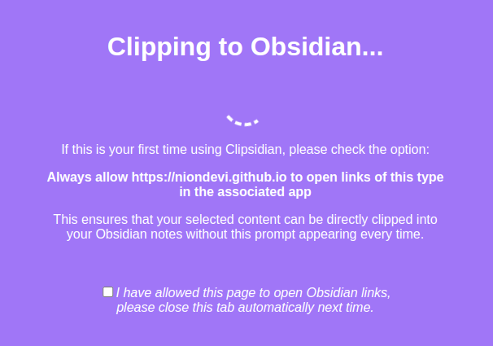

Clipsidian
Clipsidian


A Chrome extension that makes information gathering easier for Obsidian users. With a simple highlight and click, capture vital web content and send it directly to your Obsidian vault with one of many customizable clipping actions.
Transform your web-browsing into a streamlined research tool.
Key Features
-
Customizable Clipping Actions
Create multiple clipping actions with Clipsidian, precisely choosing how to save every web clipping within your vaults.
Each clipping action you create is added to the context (right click) menu of selected content in web pages. -
Dynamic Target Note Paths
With the ability to use placeholders like{title},{date}, and{time}in your target note paths, Clipsidian allows for seamless organization of your clippings. This dynamic functionality enables you to save clips to specific notes based on the clipped page or time of clipping. -
Enriched Clipping Templates
Auto-embed valuable metadata with placeholders like{date},{time}, page{title}and page{url}with every web clipping. -
Flexible Date and Time Formatting
Customize how the{date}and{time}placeholders appear in your clippings. Clipsidian let's you change the format of your dates and times, including setting the locale to match your language.
Date Example:{date:LLLL dd, yyyy}turns intoJanuary 1, 2000
Time Example:{time:hh:mm a}turns into01:23 AM
Date / Time formatting tokens are from the Luxon library. -
Clipping Action Behaviour
You can choose whether you want to append or overwrite the note with your clipped content.
Installation
For manual installation please follow these steps:
- Clone or download the Clipsidian GitHub repository to your local machine.
- In your browser, open your extensions manager.
- Enable Developer mode by clicking the toggle switch in the upper-right corner.
- Click on Load unpacked and navigate to the directory where you have downloaded or cloned the Clipsidian repository.
- Select the folder and click Open to install the extension.
- Please note, extensions installed in Developer mode will not receive updates automatically. You'll need to manually pull new updates from the GitHub repository and reload the extension in your Chrome browser.
How to Use
- Configure your actions: Open the Clipsidian extension options in your Chrome browser and set up your clipping actions.
- Highlight the content: In your web browser, select the content you want to add to your Obsidian vault.
- Access the context menu: Right-click on the highlighted content.
- Select the relevant action: From the context menu, select a clipping action. The "Clipping to
Obsidian..." tab should open.

- Allow Clipsidian to open Obsidian: If it's the first time you're using Clipsidian, read below on how to authorize it to open your Obsidian. After that your note should be saved in Obsidian!
- The clipping is saved!: Obsidian should open as a sign it received your clipping, and after that your clipping should be saved!
First Time Authorization (Obsidian URI)

For first-time users, you will need to authorize Clipsidian to open Obsidian URI links.
This authorization is necessary due to how the browser handles Obsidian URI requests.
Without this step, the browser would require you to authorize each individual page from which you want to clip
content, which can be
inconvenient and time-consuming.
By authorizing the page at Clipsidian's Github Pages (readable version), you enable it to handle all subsequent clips, thus avoiding repeated authorization requests. This authorization only happens once, streamlining your clipping process. When handling subsequent clips, any data (like the content to be clipped) that's passed as URL parameters to that page is not sent to a server but is instead handled entirely within your browser.
Configuring Clipping Actions
Effortlessly save and organize your digital snippets with our easy-to-use Clipping Actions feature! Tailor your clipping process to suit your needs using customizable options and dynamic template strings.
Take full control of date and time strings with formatting options and language settings. Learn more about Configuring Clipping Actions here.
Data Safety
Your data is secure and is only processed within your browser. Clipsidian doesn't send, track, or store any of your details. If you still have any doubts, you or someone you trust could always take a look at the code (it's open source!), just to make sure everything's clear. As an open-source project, Clipsidian is built on full transparency.